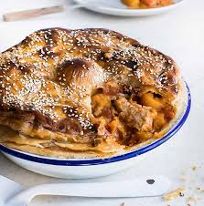

Home
Pork Pie

Classic New Zealand pork pie, great for the whole family.
This classic kiwi pork pie feeds 4-6 people, takes 40-45 minutes cook time and 2 hours 20 minutes prep time.
Ingredients
- 500g diced pork shoulder
Pork
- 2-3 tablespoons flour
- 3 thick cut rasher bacon
- 1 leek
- 500g pumpkin
- 1 carrot
- 400g can chopped tomatoes
- 1 cup vegetable stock
- 1 bay leaf
Pastry
- 250g pre-rolled flaky puff pastry
- 1 egg yolk
- 1 tablespoon milk
Steps
- Preheat oven to 160°C
Pork
- Heat a large frying pan over medium heat and add a little oil.
- Dust the pork pieces in seasoned flour and, in batches, place in the hot pan and brown on both sides.
- Transfer to a casserole dish as you go.
- Lower the heat and add the bacon and leek. Cook for 5 minutes until the leek softensLower the heat and add the bacon and leek. Cook for 5 minutes until the leek softens.
- When the leek has softened, add the pumpkin and carrot.
- Add the tomatoes, stock and bay leaf and stir well, scraping the bottom of the pan to gather all the tasty bits and season.
- Add to the casserole dish with the pork.
- Cover dish with the lid and place in the oven to cook for 2 hours until the pork is tender.
Sauce
- Remove from the oven and thicken sauce, if necessary, with butter and flour paste, to give you a thick sauce.
- Remove and discard bay leaf and leave pork to cool completely.
Pastry
- Preheat the oven to 190°C
- Place a pie bird or upturned egg cup in a medium-sized pie dish.
- Spoon the cooled pork casserole into the dish.
- Mix together the egg yolk and milk.
- On a lightly-floured bench, cut a strip of the measured pastry to fit the edge of the pie dish.
- Run a wet finger around the edge then place on the pastry strip.
- Brush pastry strip with a little egg wash.
- Roll out the pastry a little more to fit the top of the pie. Place the pastry top on and press lightly to seal.
- Cut away any excess pastry and crimp the edge.
- Using a sharp knife, 'cut up the pastry' by making horizontal cuts into the pastry edge. This seals but also helps the pastry to rise.
- If not using a pie bird, make 2-3 slits with a sharp knife in the pastry top for the steam to escape.
- Brush the top with egg wash and place in the oven.
- Bake pie for 40-45 minutes or until the pastry is well browned with no damp looking patches and the filling is piping hot.